Moneybee admin · 17 October 2026
The admin, without dead ends
Several admin screens used to stop where the work should start. A person was a bare form, files could not go in an email, tasks could be read but not added, and deals were an empty list. Each screen now leads to the next thing to do, and the work makes its own follow-ups.
- Production build passes
- Typecheck clean, 0 lint errors
- 56 tests pass
- Every flow tried in the browser
- Not committed, not pushed
What changed
Six pieces, built in this order. Each one was checked working before the next began.
| Screen | Before | Now |
|---|---|---|
| A person | A form of their details | Their page: write, log a call or meeting, plan the next step, see everything that has happened |
| Files | Uploads only the website could use | Any file goes in any email; each file shows where it is used and who received it |
| Tasks | Shown on Today, never added | A Tasks desk; calls, playbooks and deals make tasks; reminders by email |
| Client accounts | Made by hand, and the investor was never told | Invite to the portal from their page; they set their own password |
| Deals | An empty list of data forms | A board by stage, with each deal's next step and the details each move needs |
| Entities | Stored, shown nowhere | Invests as on the person, offered from the enquiry, shown on deals |
One investor's path
How the pieces meet for one prospect, from the Contact page to money in.
- Vikram Malhotra sends the Flyingbee form and says he invests as an HUF. The enquiry lands in Enquiries with its reply clock.
- Someone takes it. The AIF playbook's steps become their tasks, and the enquiry offers to record the HUF.
- They reply with the Flyingbee introduction. Its files come attached by themselves, and the reply step ticks off.
- They call him. No answer, so a call-back appears for the next working day at 10:00.
- He is serious, so they open a deal. It shows on the board under Contacted, carrying the HUF.
- They drag it to Meeting, give the time and place, and the Meeting confirmation opens already filled in.
- The forms go out. Documents sent records which files went, and a chase call appears three working days later.
- The money lands. Invested keeps the amount and date, invites him to the portal, and opens the Funds received letter.
Step 1 of 6
A person's page
/admin/people/:id · from a name in People, a task, or a deal card
Everything about one person on one screen, laid out like an enquiry. The main column is for doing things and reading what happened. The side column holds one decision per panel.
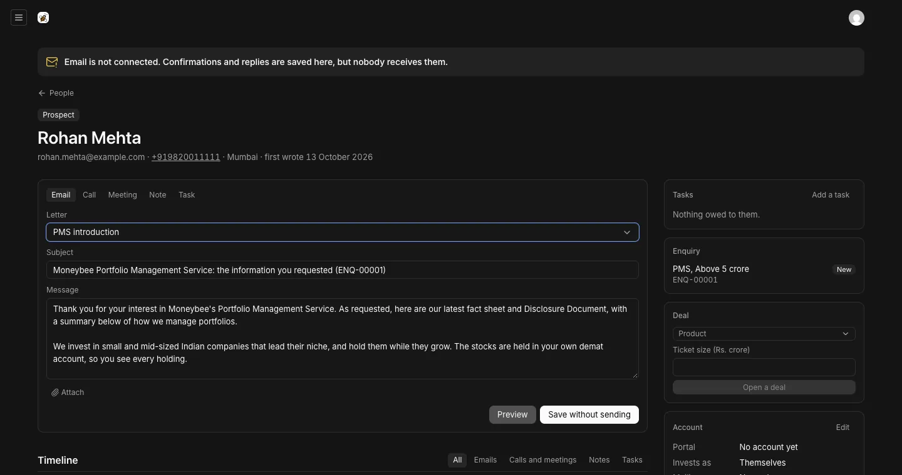
The composer
- Email sends any letter that can go to them: a reply on their enquiry, a client letter with its facts, or one in your own words.
- Call and Meeting ask how it went (Spoke, No answer, Left a message, Wrong number) and offer a Then follow-up. No answer suggests a call-back next working day at 10:00.
- Note leaves a line for whoever opens them next. Task plans something for anyone on the desk.
The side panels
- Tasks: tick one, write what happened, save it to the timeline, or Undo.
- Enquiries: each of theirs, with its state.
- Deal: the stage to move it to, or a form to open one.
- Account: portal, invests as, mailings, owner, where they came from. Edit changes them in place.
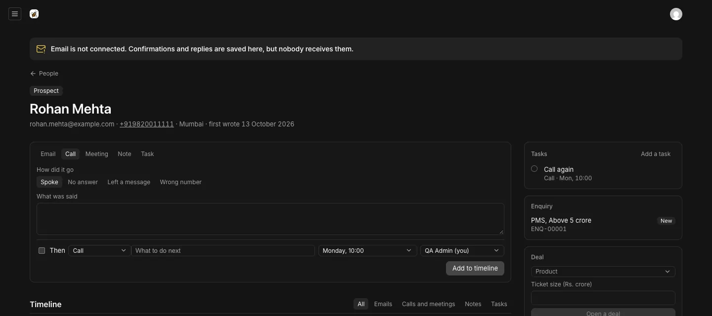
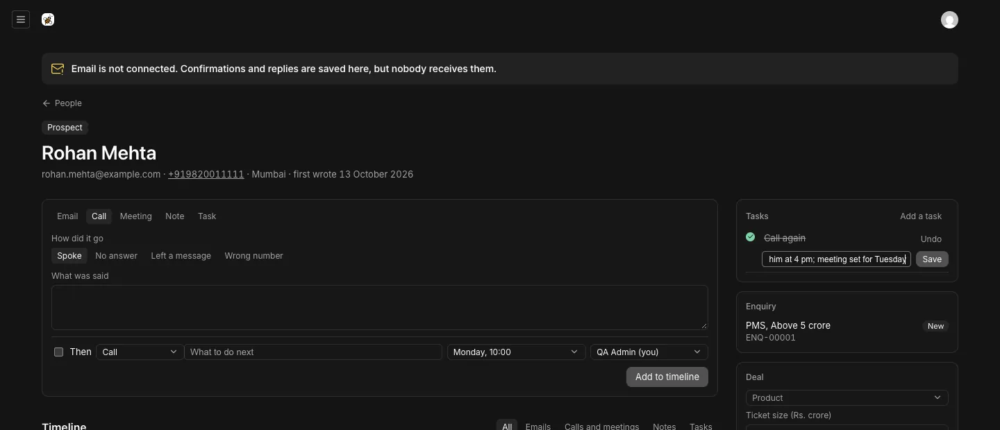
Step 2 of 6
Files, in every email and on one screen
Attach on every letter · /admin/files
Any file Moneybee keeps can go in any email: from a person's page, an enquiry reply, an HR email, or the Emails page. A file uploaded while writing stays private to the people it is sent to. The whole email is capped at 30 MB, under Resend's limit.
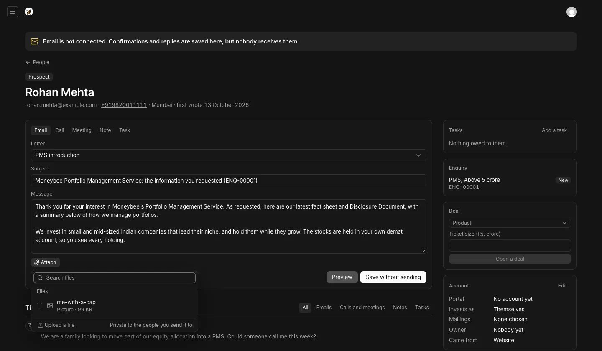
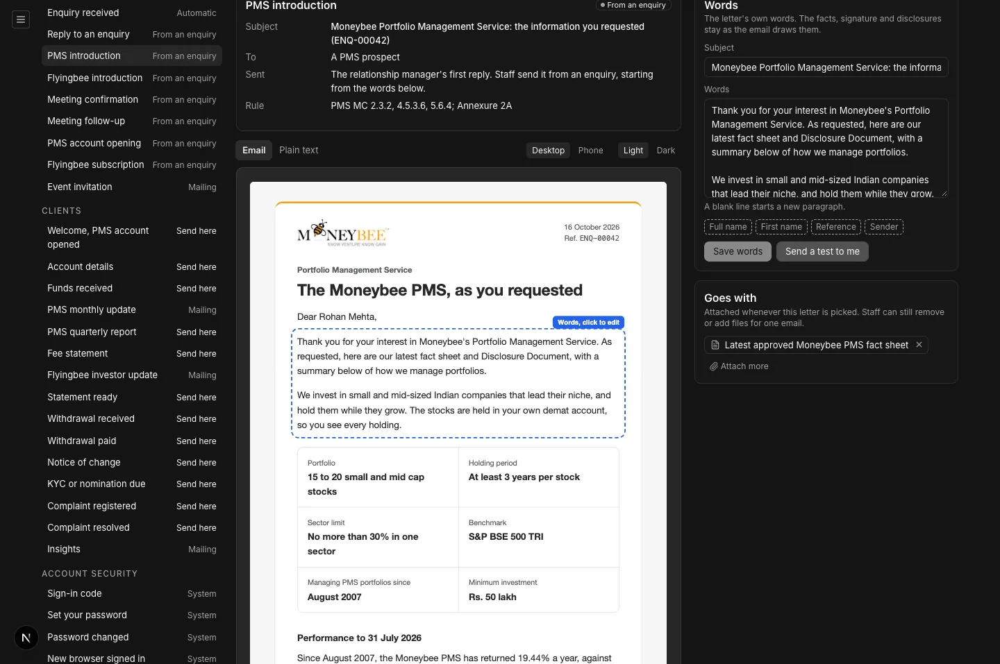
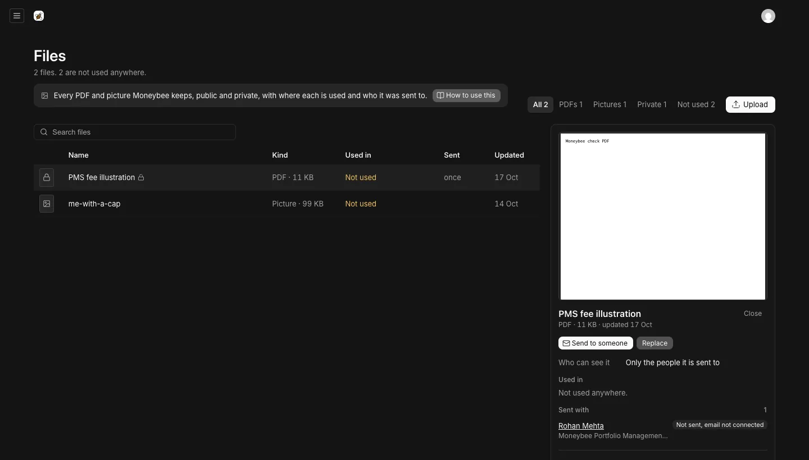
- Tabs: All, PDFs, Pictures, Private, and Not used (no page, card or letter uses it, and it was never sent).
- Used in is worked out from what points at the file: a team photo, a document card, a fact sheet, a page, a letter.
- Send to someone opens a person's page with the file attached. Replace keeps every link working. Delete is refused while the file is in use.
- A public PDF can become a document card on the site in one step.
Step 3 of 6
Tasks
/admin/tasks · T anywhere in the admin
A task is something one of us owes someone, with a time. Most are made by the work itself, so the desk rarely types them.
| Made by | What appears |
|---|---|
| A call or meeting | The Then row's follow-up, such as Call again on the next working day |
| Taking an enquiry | Each playbook step, timed by compliance: with the reply, next working day, in three working days, in a week |
| Moving a deal | The meeting itself, or the chase for signed documents |
| Anyone, by hand | Press T: what, for whom, when, and who does it |
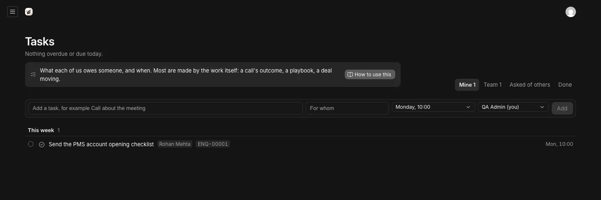
- Each row is done from the row. A call shows the number to dial. An email has Write, which opens the person's letter; sending it ticks the task.
- A playbook step ticks itself when its event happens: a reply sent, a call logged, a deal opened. Rules that are not tasks sit under Keep in mind.
- The Desk menu shows how many of yours are overdue or due today, and Today lists them.
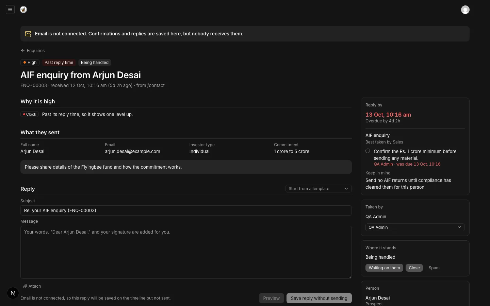
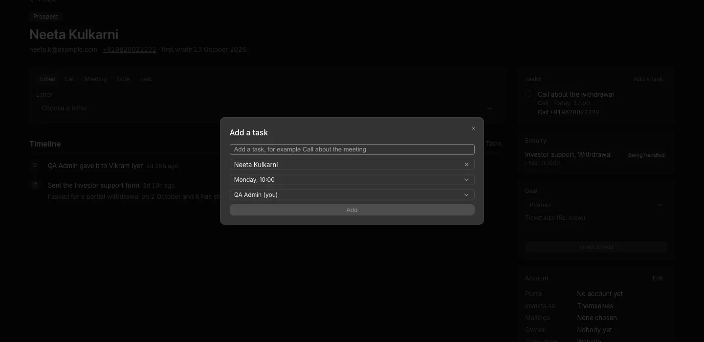
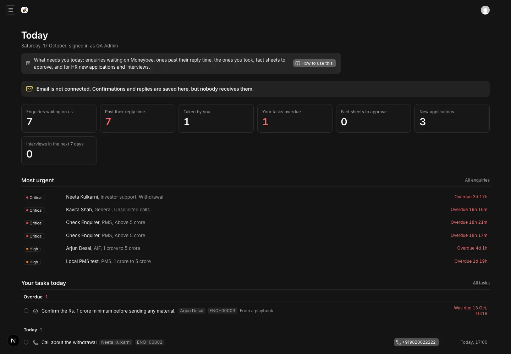
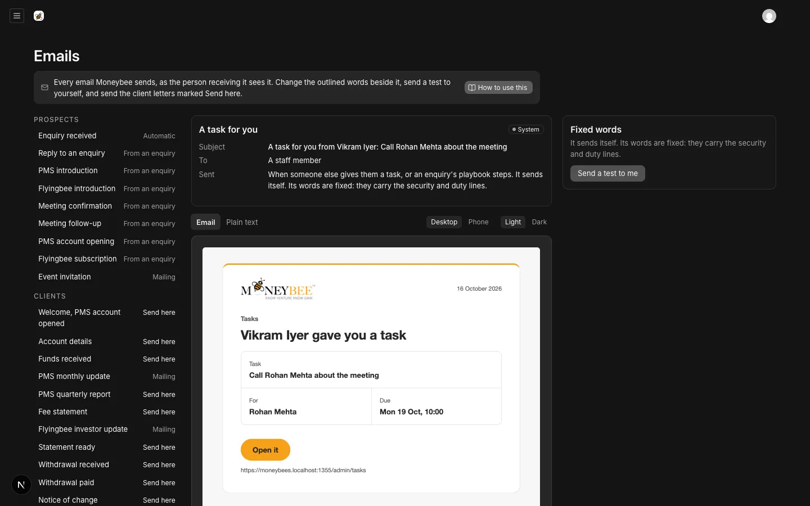
Step 4 of 6
Inviting a client to the portal
Account panel on their page · Settings › Client accounts
Operations press Invite to the portal on the person. That makes their client account and emails a link to set their own password. Nobody at Moneybee types or sees an investor's password.
- The link works once, for seven days. It is never stored on a record staff can open; the timeline says it went and until when.
- The Account row then reads Invited 2d ago, not signed in yet, with Send the invitation again.
- Once they sign in it reads Signed in just now, and the invite button goes.
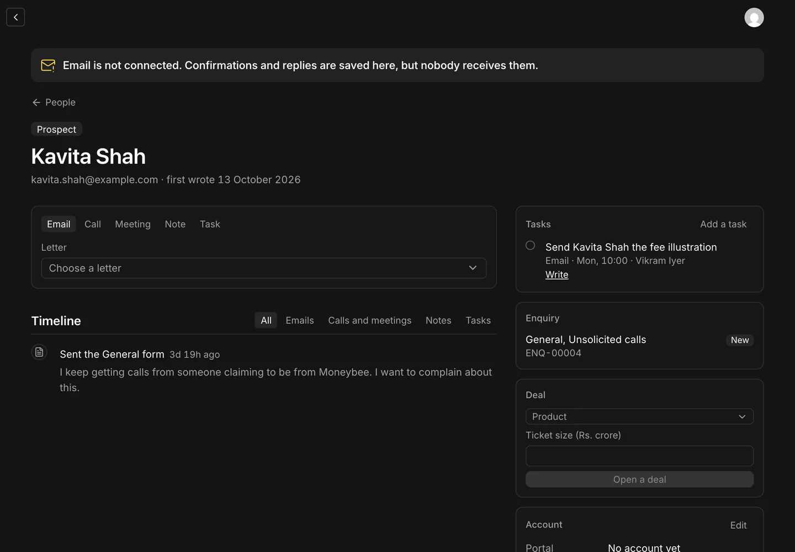
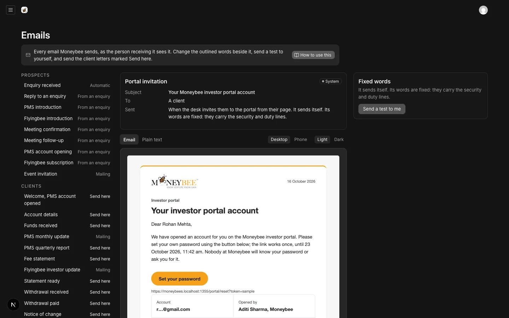
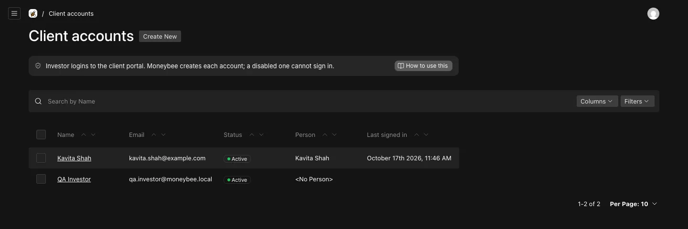
Step 5 of 6
Deals board
Desk › Deals · /admin/deals
Every prospective investment of one product, on a board by stage. PMS and Flyingbee AIF have a board each, on equal footing. The line under the title gives the money in open deals and how many have no next step.
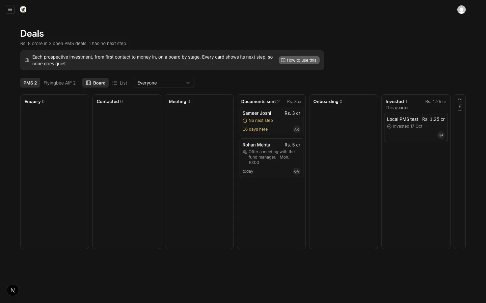
Reading a card
- The person, and the entity they invest through.
- The amount in Rs. crore, and the owner's initials.
- The next task, in red when overdue, or No next step when nothing is planned.
- Days at this stage, amber from 14.
- Invested shows this quarter. Lost shows the last 90 days, folded until clicked.
Moving one
- Drag the card to its new stage, or click it and press M for a Move to menu.
- Clicking a card opens the person. Back returns to the board as it was.
- The same moves work from the Deal panel on a person's page.
- Every move is a line on the person's timeline.
Moves that ask first
| Moving to | It asks | Then |
|---|---|---|
| Meeting | When (next working day at 11:00 to start) and where | Adds the meeting to the owner's tasks and opens the Meeting confirmation, filled in |
| Documents sent | Which files went, ticked from their last two months of emails | Adds "Chase the signed documents", a call in three working days |
| Invested | The amount and the date | Offers the portal invitation, then opens the Welcome letter (PMS) or Funds received (Flyingbee), filled in |
| Lost | Why: went with another manager, below the minimum, not eligible, not now, stopped replying, other; and a line | Closes the deal's open tasks |
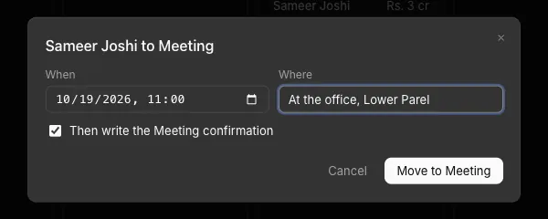
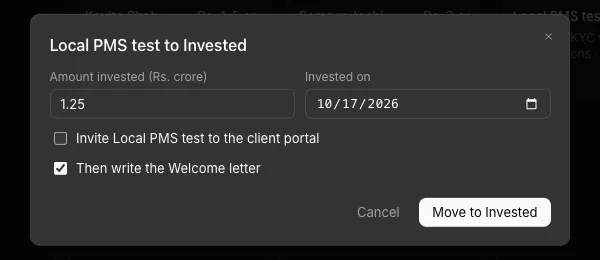
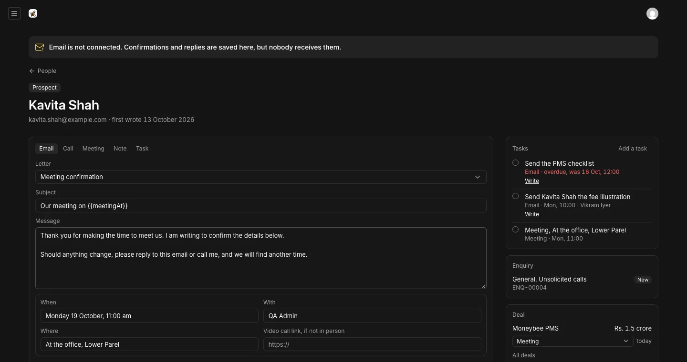
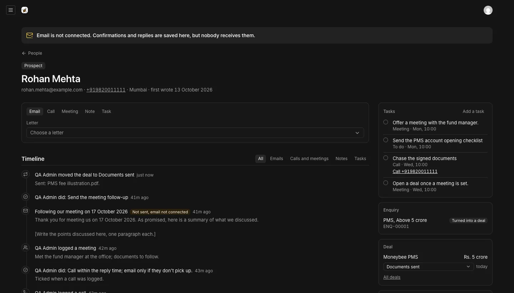
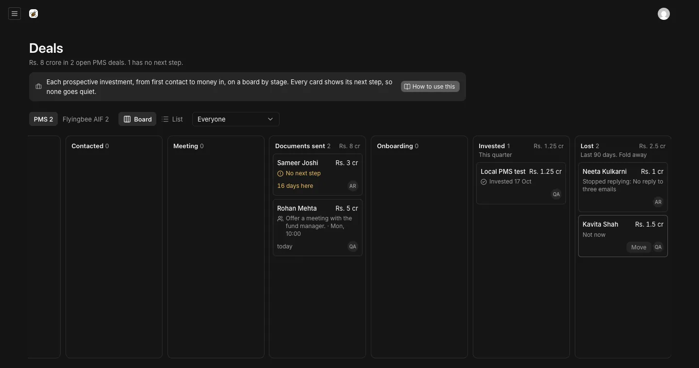
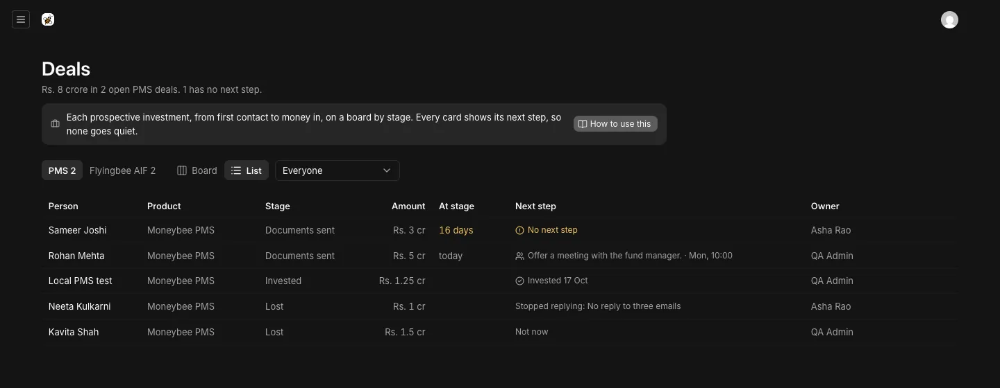
Step 6 of 6
Who the money comes from
Invests as, on the person · the enquiry's Person panel
HNI money often comes through an HUF, a family office, a company or a trust, and one of them can have several people. The person's Account panel says what they invest as, and Change sets it.
- Choose Themselves, or HUF, Family office, Company, Trust or Other, and give its name.
- Typing the name of one that already exists links them to it, so a father and son share one HUF. The row lists the others.
- The Flyingbee form asks for an investor type. When it says HUF, Family office, or Company or trust, the enquiry and the person offer to record it.
- Their open deals follow, so the board shows it. Invested and Lost deals keep the entity they closed with.
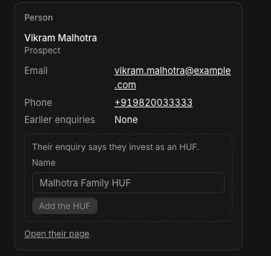
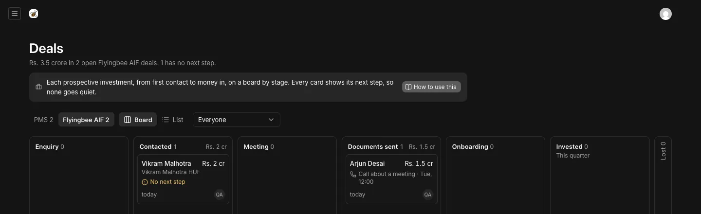
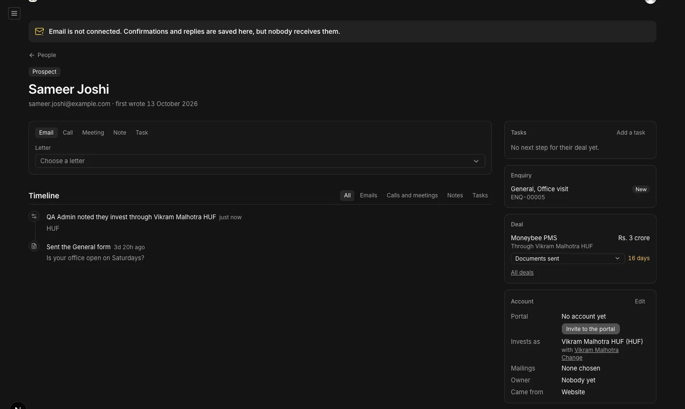
Checks and gaps
Checked
- A production build of the uncommitted code compiles and builds all 31 pages.
- Typecheck clean; 0 lint errors in the app code; 13 CRM and 43 email tests pass.
- Each flow above was done in the browser against the local database, including a real Flyingbee form and a full portal sign-in with the emailed link.
- Tasks closed by a Lost move, the chase task's date, and the stage clock surviving an entity change were read back from the database.
- The admin Guide covers Tasks, Files and Deals, with new pictures of each and of the sidebar.
Not yet checked
- A real email through Resend with attachments. There is no Resend key yet, so emails are saved on the timeline and not sent.
- Uploading straight to the private file store. It needs the store's token; the laptop path was tested instead.
- Replaying every migration on an empty database. An older migration (12 October, remaining pages) already fails there because it seeds openings before the hiring table exists. Existing databases are unaffected.
One known quirk: the Meeting confirmation's subject shows {{meetingAt}} while you write it. The time from the When field is put in when it is sent, as it was before on the enquiry reply.
Before it ships
- Review and commit. Nothing is committed or pushed. Seven new migrations run by themselves on the next deploy, before the build.
- Connect Resend. Portal invitations, task emails and replies all wait on the key.
- Clear the local test data if you want a clean board:
npx payload run .plannotator/admin-dead-ends/check/remove-board.tsremoves the "QA board:" deals. Vikram Malhotra's enquiry, HUF and deal came from the real form and stay until deleted.
Still waiting, as before: client statements (India hosting under CSCRF), distributor logins (what a distributor sees is your call), the AI features (gateway credits), the mailing desk for lists, and tracked links for the PPM.
What changed underneath
| Migration | Adds |
|---|---|
20261014_151508_columns_for_seeds | Columns the hiring seed needs, so fresh databases get them in order |
20261016_184252_files_and_tasks | Private files; attachments on emails; task kind, letter, outcome, source and creator; Goes with on letters |
20261016_184300_letters_go_with | The PMS introduction goes with the latest PMS fact sheet |
20261017_054250_playbook_step_tasks | Which playbook step a task came from |
20261017_054300_playbook_step_timing | When each playbook step is due, and what ticks it |
20261017_060832_investor_invitations | Invited, invited by and last sign-in on client accounts |
20261017_061857_deal_moves | Why a deal was lost, and when it was invested |
The new screens live in components/admin/people, files, tasks and deals, with their data in lib/crm and lib/files. The daily task email runs from /api/cron/task-digest at 03:33 UTC on weekdays.